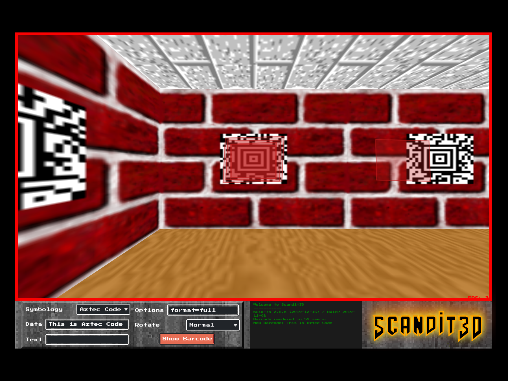

The yearly hackathon at work is always a great time to pursue new ideas or play around in fun ways with existing technology. My entry in 2019 was a humorous take on using simulations when developing computer vision software. I long wondered to see if we could use modern game engines or other simulation technology to augment some of our real world testing at scale.
For the hackathon, I decided to apply my (as you will see quite limited) skills and implement a prototype of such a system.
Scandit3D
The result was Scandit3D, it’s a pseudo-3D environment full of barcode textures and a camera which automatically scans any barcodes it sees.

Try it out
You can try it out at http://scandit3d.kuendig.io/ or click on the image below to run it on this site.

- Click once in the main area to start it (click a second time to go into fullscreen).
- Once the game runs, you can add barcodes via the barcode generator. Selecting a new symbology or pressing enter automatically regenerates the barcode
Bugs & Improvements
There were a few things I didn’t get to implement in the 36 hours available:
- Graphics
- Full screen
- 🐞no message on lauch (“click to start”)
- start screen / animation
- blood animation / overlay
- take screenshots (ctrl/cmd+c)
- Add screensaver mode (autostart with rotating barcodes)
- Sound effects
- 🐞 gun sound doesn’t play (commented out)
- Background Music
- 3D Maze
- better textures (not from Win95)
- default enable lightening (only on space currently)
- automatically loop barcodes (press 1-9 to set scans per symbology, 0 to disable)
- Status bar
- 🐞aspect ratio of status bar (Doom used non-square pixels)
- 🐞using AmazDooMLeft for whole logo (instead of just left side)
- Source Quality
- code cleanup
- use npm / web bundler to build
References
Being a single dev and having barely more than a workday, I had to stich together what I could. So no, this isn’t using Unreal Engine with custom bindings for the barcode scanner. Instead:
-
The barcode scanner is the amazing Scandit Barcode Scanner for the Web.
-
The barcode generator used is which is a translation to native JavaScript of .
-
The 3D maze is based on the WebGL-port of the 3D Maze screensaver from Windows 95 available at .
-
The status bar uses the UI elements from and the font is Press Start 2P. The background is a modified version of
STBARfrom the DOOM1.WAD. -
The Scandit3D logo uses the AmazDooM font.
-
The gun sound is
SPISTOLfrom the DOOM1.WAD.